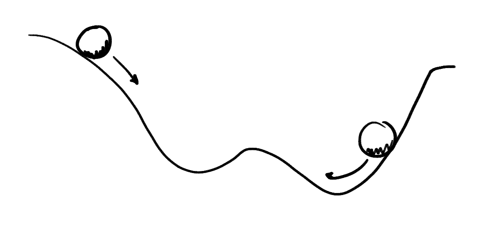
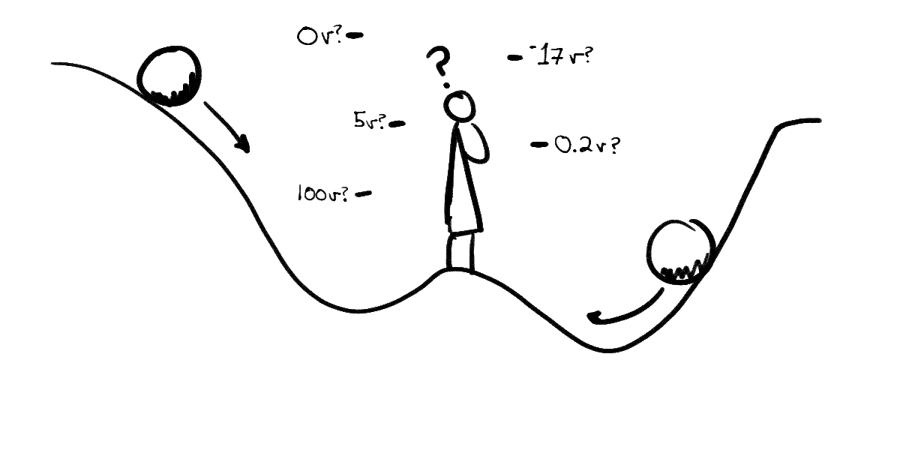
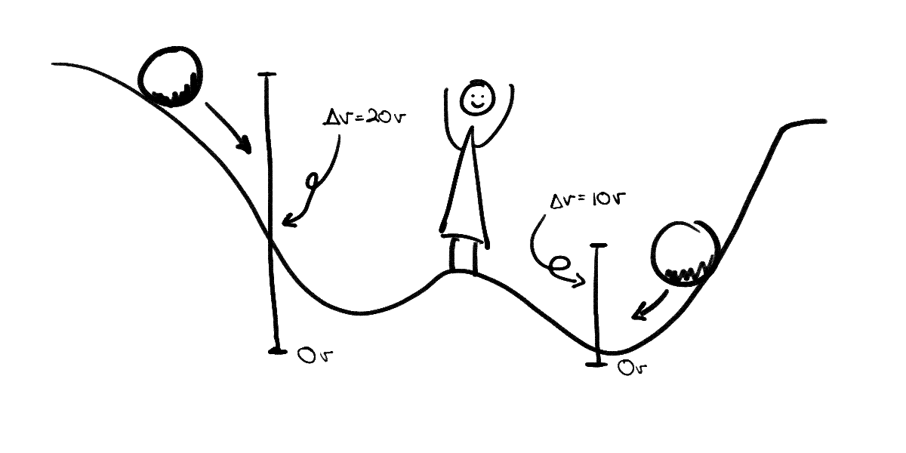
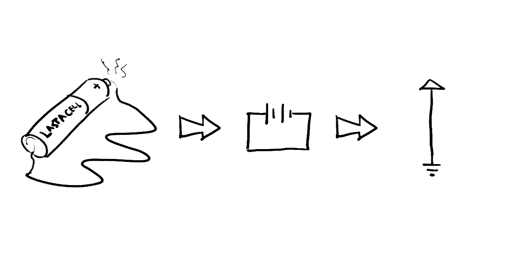
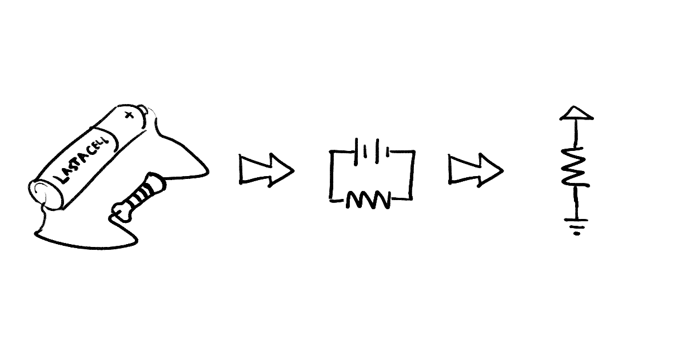
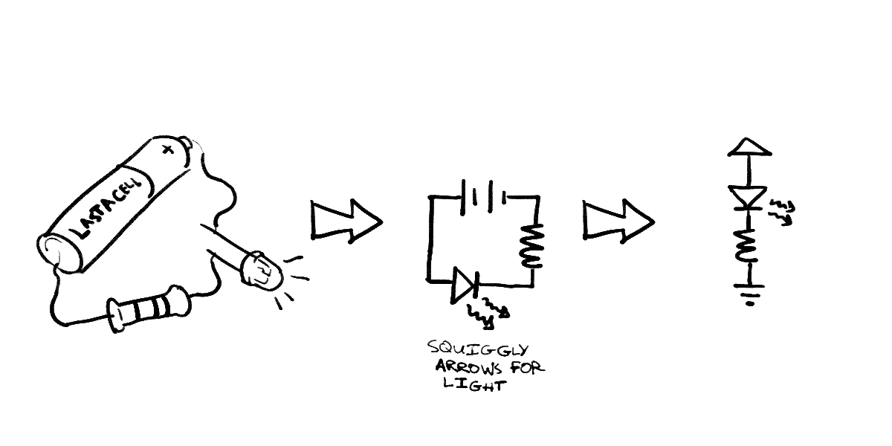

2: An Introduction to Circuits
This guide is a quick introduction to the mechanics of electricity and simple circuitry. We’ll start by explaining the circuit itself in concrete terms, including Ohm’s Law, and then dive into circuit diagrams. This guide should help you analyze circuits intuitively and understand new components fairly quickly.
Table of Contents
- What is a circuit?
- What is electric charge?
- What is a flow of charge?
- Current, Resistance, and You
- How to make a circuit
- How to put things on your circuits
- Conclusion
What is a circuit?
You might have a basic intuition about circuits. They have batteries, wires, and maybe some little incandescent bulbs and switches. You might have heard people talking about “charge flowing” or “voltage drops”, but what does that mean?
We’re going to look at electricity and circuitry as if they were water flowing through pipes, and, using that analogy, develop a strong intuition for all those phrases you may have heard. After that, we’ll apply that intuition to more complex circuits so that you’re fully prepared to build them in class. This is a pretty common way to teach electricity, and it’s called the hydraulic analogy. It’s wildly inaccurate sometimes, but it is perfect for the kind of circuits we make and will be a good mental model for almost all electricity until you start dealing with magnetism1.
So, what is a circuit? A circuit is a continuous flow of electric charge2.
What is electric charge?
“Electric charge” as a concept on its own is hard to explain. It’s an intrinsic property of matter, just like mass or position. What does that mean?
An object’s electric charge is a measurement of how affected it is when placed in a magnetic field. This is similar to how you can think of mass as a measure of how hard it is to change an object’s velocity (more massive objects are harder to start moving). Electric charge and mass are both measures of how much or to what extent—empirical properties that can only change by transforming the object into something else.
We describe circuits as “flows of electric charge,” but in reality that is a simplification. In most cases, it is a real particle with electric charge that flows. However, many different particles carry electric charge, and in very different ways, so thinking about the charge itself flowing rather than mediator particles flowing is very helpful.
We measure charge in “Coulombs.”
What is a flow of charge?
Why, it’s a potential
If the circuit is a continuous flow of electric charge, and we talked about “electric charge,” it’s now time to talk about the flow. In fact, this flow is the only important part of a circuit for our purposes.
The good news: you probably have strong intuition about flows. You know how water flows from areas of high pressure to areas of low pressure, that it flows down mountains (and not up them). You may even be used to terms like potential energy, which we use to describe how things “flow” in the pull of gravity. In a sentence, objects with electric charge tend to flow from regions of high electric potential energy to regions of low electric potential energy.
The bad news: unlike “normal” potential energy, the amount of electric potential energy an object gets from being in an electric field depends on that object’s electric charge3. To deal with that, we measure the potential energy of a circuit in terms of how much energy you’d get for one unit of charge. We measure it in Joules per Coulomb, or Volts.
This difference should not change your mental model too much. Any charged object in an electric field will move to an area of low electric potential, it will just happen faster for higher-charged objects. So aside from that caveat, it makes sense to conceive of this pseudo-potential energy as a normal potential energy.

Voltage, schmoltage
But even after all this work, we know from classical physics that any potential energy, even compensated for charge, is a strictly relative measure. A potential energy must be relative to some reference point since it literally measures the energy that would potentially be released as an object moves from it’s current location to that reference point.

The useful measurement for any potiential energy, then, is a measurement between two points. In the case of electrical potential, we call that a voltage, or $ΔV$—“delta v” (“$Δ$” means “change” in most fields of mathematics, so “change in volts”). Usually we describe it as “voltage across something”‚ like across a wire, a circuit, or a lightbulb.

Measuring voltage requires measuring the difference between two points, and obviously voltage will vary based on where you measure it.
Current, Resistance, and You
It’s not quite descriptive enough to visualize circuits as balls on a hillside. There are two aspects of a circuit, current and resistance, that this metaphor does not represent.
Instead of thinking about circuits as basketballs rolling down the hillside, think of them as water flowing through a pipe on that same hill. A pipe has a diameter. If we change that, we can adjust the flow rate. Smaller pipes allow less water through them, and larger pipes allow more.
We can also put waterwheels in the pipe that push against the flow of water. These waterwheels and different diameters resist the current of the stream, fighting its flow of charge. Circuits are not physically flows of water, of course, but most physical circuit components have some intrinsic resistance that functions like a pipe diameter or a hard-to-turn waterwheel. This should be intuitive: components use the power of the flow to do other work, like heat up, light a filament, or spin a motor. We call components designed specifically to resist the flow of current resistors.
You measure current in amperes, or “amps” for short. The unit symbol is an “$A$”—$45A$ means 45 amps—and you call a given current an “amperage” (so a lightbulb might have an amperage of 12A). You measure resistance in ohms, using an $\Omega$ as the symbol. A motor might then have a resistance of $9 \Omega$.
Ohm’s law
Both current and resistance relate to voltage via Ohm’s Law:
where $V$ is voltage, $I$ is current, and $R$ is resistance.
This equation should make intuitive sense: the energy that will be expended going between two points should depend on how much stuff can get through at any one instant and how hard it is for the stuff to get through.
In fact, all electrical components follow this law, with one caveat: resistance sometimes changes based on various factors, including voltage. We call circuit components that don’t change resistance “ohmic”.
An intuitive explanation
It’s important to think about this law for a little bit if it doesn’t make immediate intuitive sense.
The resistance bit of the equation is pretty easy to make sense of. More resistance? More energy needed. Less resistance? Less energy. The current bit threw me for a while, so I’m going to focus on that.
Imagine two elevators lifting people a very long distance (high resistance). One can move 500 people in one trip (high current), and the other only moves 1 person at a time (low current). Which one should require the most energy to run a given trip? Clearly the larger elevator.
Ignoring other energy expenditures and assuming they are otherwise identical, both would take the same energy to lift up 500 people. However, in a given instant, the smaller elevator requires less energy because it is only lifting one person at a time. Likewise, two rivers of different strengths might both be able to push a giant block of lead downstream, but the weaker one might take considerably longer to do so. The weaker stream has less energy at any instant.
It makes sense, then, that potential energy is depenent on current and resistance.
How to make a circuit
“How do I even create a potential difference, or, more accurately, a voltage drop?” I hear you ask in your charming, erudite tone, having now learned the difference between the two. Well, you would build a circuit! You take a power source—a battery, an arduino pin, a direct connection to the power lines4—and connect a wire (and physical components) from its “high” point to its “low” point.
As soon as there is a connection between those two points, there exists a voltage across that wire. Power sources lift up charge from its low, exhausted state to its high, fresh state. A $5V$ battery gives a circuit 5 volts from its positive end to its negative end. If you take a paperclip and put one end on each tip of a AA battery, the end by the bump would be at high voltage and the end by the flat side would be at low voltage.
By convention, we assume charge flows from positive to negative, high to low—or “ground,” as it’s called. This happens to be the opposite of what actually happens for electron flows5—electrons actually flow from negative to positive—but Benjamin Franklin didn’t know that when he decided the notation. Since not all current flow is electrons, we decided not to mess with his convention (see footnote).
Since we think of the negative terminal as the end of this charge flow, we measure the total voltage of the circuit from the high point to the low point. In the AA’s case, it’s about 1.5V. That’s the total amount of potential energy (relative to charge) that a single AA can put out. In fact, that’s what the battery puts out no matter what as long as it physically can. The energy between high and ground in a completed circuit must be dissipated, even if there’re no components using it. For that reason if you put a paperclip to both ends of your AA, the paperclip gets really hot really fast: the circuit you’ve completed by making poor decisions with paperclips disipates its energy as heat.
Drawing the paperclip circuit
Because engineers don’t like drawing realistically, we have the circuit diagram to depict circuits.
The paperclip-battery circuit looks something like this:

The main symbol in this circuit is the battery, attached to the thin wire. Actually, it’s two symbols: one symbol for a positive terminal and one for the negative terminal. Sometimes they’re grouped together to denote a power cell, or doubled to mean a battery (a battery is defined as a stack of power cells). In computer circuit diagrams, we generally keep high and low separate, even if they connect to the same battery or Arduino. It keeps the drawing simpler.
Adding resistors
This paperclip circuit is an example of poor decision making. The simplest sensible circuit, i.e. the simplest circuit I recommend building, includes another component: a resistor.
In general, if you want to hook something up to a circuit, there’s a symbol for it. However, if you don’t know the symbol, or if one doesn’t exist, you can just draw a resistor. Try to label any resistors you diagram if they signify something other than a resistor.
Thus, if we plop a resistor on our simplest circuit, we get the simplest sensible circuit:

How to put things on your circuits
Once you understand the basics of circuit diagramming—and really, once you understand the conventions all you need to look up are the symbols—you’re set to build your own.
Looking up how to work with new components (like potentiometers, switches, capacitors, and everything else) is half the fun6, but it’s important to understand two other circuit components before you can wire them.
LEDs & diodes
LEDs are fickle creatures. Unlike traditional lightbulbs, LEDs cannot be placed onto a circuit heedlessly. First, LEDs have very little resistance (or very little). A circuit with just an LED is similar to the paperclip-battery circuit. It must be resisted separately, with an additional resistor. Second, LEDs only allow current in one direction. If placed backward, they will not light up.
These traits are shared among all diodes—LED stands for “Light Emitting Diode.” Diodes prevent current flowing in one direction and let it through unimpeeded in the other. Take care not to explode your LEDs: place resistors on their circuits (different colors have different optimum resistances; read their spec sheets).

You want to attach the long end (the anode) closer to the positive side of your battery and the short end (the cathode)
Arduino input & outut pins
You know that the Arduino has pins that can be controlled in code. They can read a circuit’s voltage or write one—as input or output they read or write high or low, on or off. They are represented as plain wires coming of out a box. They are usually labelled with their name or number (“pin 13”, etc).
In this class, we tend to draw them as triangles: if a pin reads from the circuit, the tip of the triangle points towards the Arduino. If it writes to the circuit, the tip points into the circuit. A pin cannot be both.
Pull-ups
When you begin building circuits to send input to the Arduino, you’ll start seeing a pattern in a lot of your circuits. You’ll see a $5V$ source, a resistor, and a grounded drain in your circuits. For example, a button might be wired as follows:
This soon gets annoying to build, so most modern microprocessors, including the Arduino, have built-in circuitry that does this for you. Setting a pin to be an input pull-up pin hooks it up to an internal 5V source and resistor, so all you need to do is connect your circuitry to ground to get a working circuit. Arduino pins by default are set to pull-up inputs.
The breadboard
Because circuits are fairly hard to construct as it stands, we prototype on breadboards, specially made bricks designed for building circuits.
A breadboard is a collection of several rows of electrical slots. They are sized to fit LEDs, buttons, resistors, and any standard through-hole electrical components. Each row is generally two columns, each with 5 slots. These 5 slots are connected to each other and nothing else. Therefore, putting wires in two of these slots is identical to physically connecting the wires together.
Each row is independent: they are not attached between rows, nor are they attached across the large gutter that separates the two main columns.
Some breadboards have bus strips on the side, long columns with one slot per row, designed to provide power to the whole board. These columns are connected only to themselves, so any slot in this clearly separate column connects to all the other slots in that column.
Most people building circuits with the Arduino will attach their 5V or GND connections to these strips and connect to that whenever they need to draw power to one of their main rows.
Looking at the bottom of a breadboard can make these connections clear.
Conclusion
Anyway, that’s it. That’s your 4,000 word primer to E&M for CSE132. You should know everything you need to build circuits in this class. Good luck!
-
By the way, I hate magnetism. ↩
-
Note that I wrote “flow of electric charge”, not “flow of electrons.” You may know from grade school or high school that electricity is the flow of electrons. This is not completely true. It works out that electrons don’t give us a useful way to look at circuits because we’re interested in the flow itself—not the individual particles transferring that flow.
This is easier to understand if we compare the speed of electric charge to the speed of electrons. For many reasons (many of them quantum physical), electrons in a circuit have an average velocity of a couple millimeters per hour. This is not that weird on its own, but we (as in “science”) know from experiments that a light hooked up to a battery will turn on as if the electric charge reached the bulb at more than half the speed of light. What can explain that speed difference?
I have two analogies for you.
Consider a firecracker exploding, separated from you by a football field. The sound reaches you a third of a second later, but lucky for you no air molecule actually went that fast (ow). The air molecules didn’t move much at all— the sound was just the air molecules hitting adjacent molecules and bouncing back. This wave of bouncing hits you in a third of a second, even if the molecules doing the bouncing did not move that fast. There’s a difference between a flow and its particles.
Or think about water pressure in a pipe with a piston on one end. If the piston moves a small bit, the pressure change moves through the water fairly quickly—around the speed of sound—even though none of the water molecules travel at that speed. Again, there must be a difference between a flow and it’s particles.
In both cases, the speed of the wave moved considerably faster than the individual molecules. This is the same in circuits, where electric charge moves considerably faster than the electrons within. Even though the force moves charged particles, like electrons, we don’t worry about them because they’re too slow.
This guide (via StackExchange) provides a deeper look at what we consider to be “charge,” if you’re interested. ↩
-
That’s why I wasted your time explaining Coulombs in the first place. ↩
-
Please, please don’t do this. If I did this, I would die, and I’m writing a guide on how to make circuits. The first step in using plugs in your house for your own circuits is “don’t.” The second is “learn electricity from a guide who has a degree in it and doesn’t teach on the internet.” ↩
-
Generally… sometimes positive charges actually flow in the opposite direction electrons would move, sometimes both positive and negative charges flow, sometimes they just kinda vibrate back and forth, and all sorts of crazy stuff, but we don’t care because a positive charge flowing right is the same as a negative charge flowing left. ↩
-
I don’t get out much. ↩